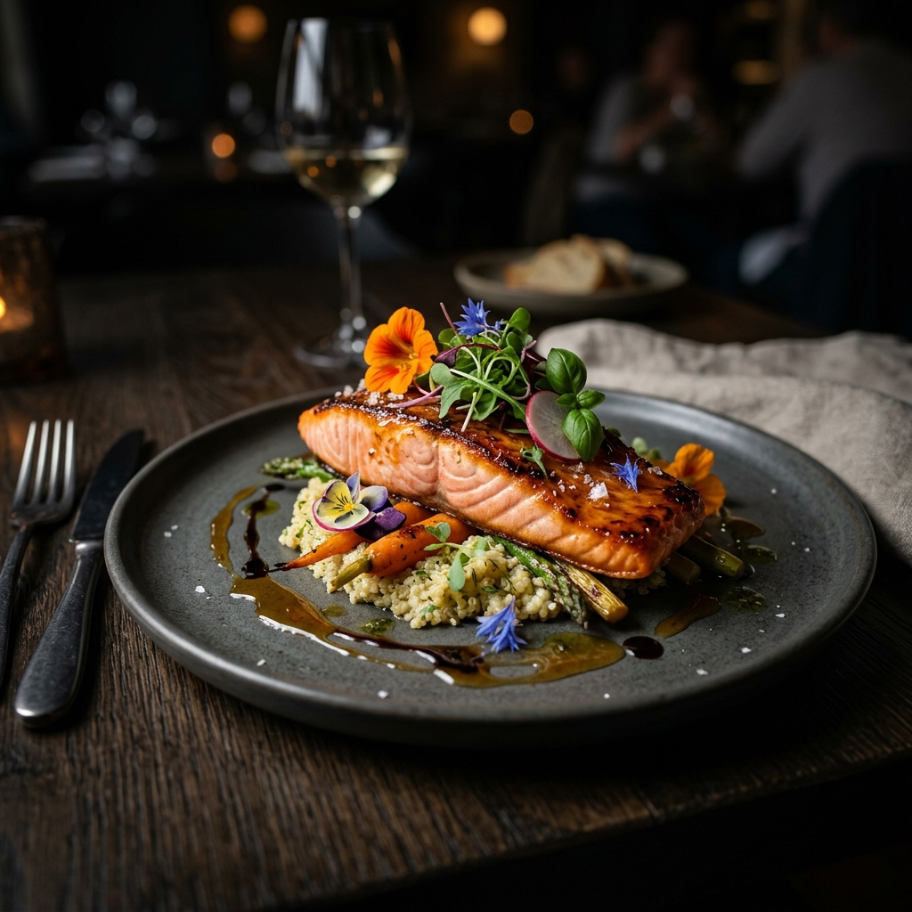
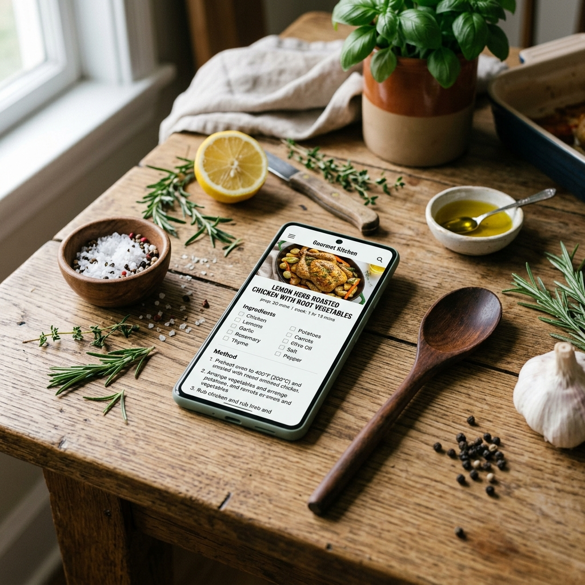

100% Exclusivo
Cozinhe como um Mestre da Gastronomia.
Descubra o segredo dos grandes chefs e transforme ingredientes simples em experiências inesquecíveis na sua cozinha.

Receita do Mês
Salmão ao Molho JV
Role para ver mais

Nossa Essência
A Arte de Cozinhar com Paixão
O Jurevenus nasceu do desejo de transformar a cozinha em um espaço de descoberta e prazer. Acreditamos que a alta gastronomia não deve ser um segredo guardado a sete chaves, mas sim uma técnica acessível que eleva o cotidiano.
Explore nossas categorias exclusivas, desde os segredos da confeitaria fina até as receitas inspiradas nas telonas, e descubra o chef que existe em você.
Técnicas Reais
Ingredientes Selecionados